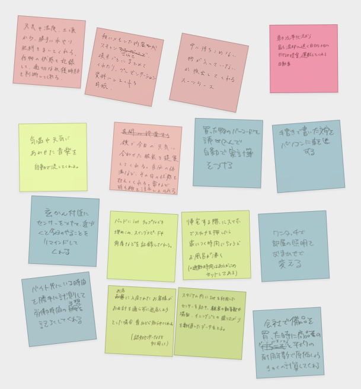
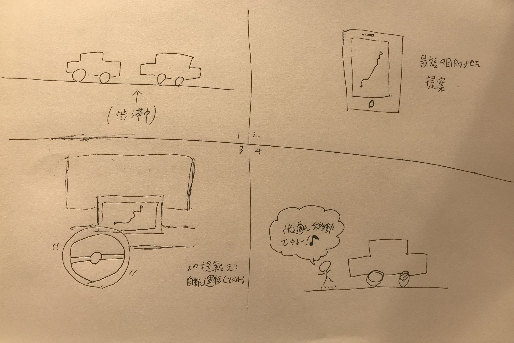

グループワークで出たものは、以下の通りになります。

1の中で、私が考えたアイデアは、
「交通渋滞を考慮してくれるカーナビ・自動車」です。
↓考えたスケッチ

この「交通渋滞を考慮してくれるカーナビ・自動車」は、
カーナビや自動車にGPSを搭載することによって（普及していることが前提）
交通渋滞を可視化し、そこから最短で目的地へ行くためのルートを提示し、
さらに、自動運転でそのルートを移動してくれるものです。